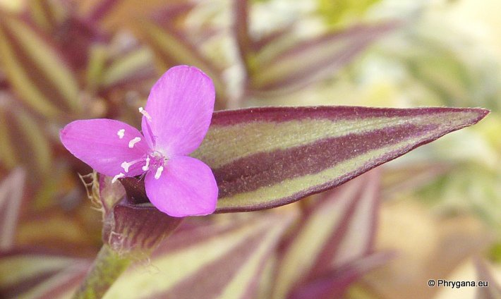
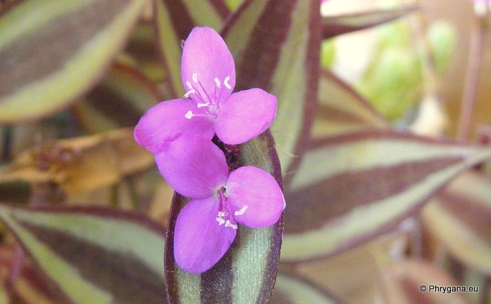
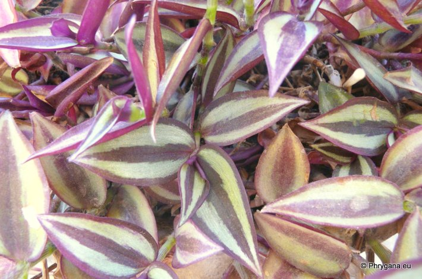
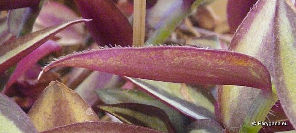
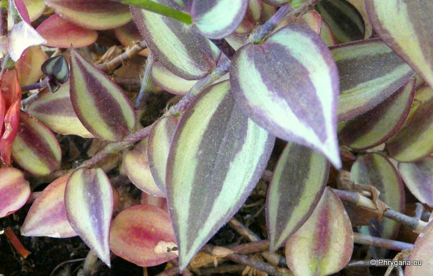

| PHRYGANA | Fauna | Flora | Galles | liste des espèces |
contact -
info - commentaires phrygana1 (at) gmail.com |
| Particularités crétoises | nouveautés | Mines | ressources naturelles |
| Tradescantia zebrina BOSSE var. zebrina |
| 468 | Flora | COMMELINACEAE | Tradescantia L. |
|
 Tradescantia zebrina Agios Giorgos (Melambes) 20 juin 2013 |
| Tiges couchées-ascendantes, radicantes aux noeuds qui touchent le sol | |
| Feuilles: charnues, alternes, semi-embrassantes, ovales pointues au sommet, avec les marges ciliées, vert foncé bleuâtre-brunâtre avec deux bandes vert blanchâtre; face inférieure pourprée; noeuds régulièrement espacés d'environ 20-25mm | |
| Fleurs: éphémères, à trois pétales rose pourpré, trois sépales; étamines à filet rose pourpé et à anthères blanches | |
| Hauteur: 10 - 30 cm | Type biologique: hémicryptophyte ramifié |
| Floraison: mai juin juillet août septembre novembre décembre | |
| Altitudes: 0 - 600 m | |
| Statut en Crète: cultivé | |
| Biotopes en Crète: jardins, patios, surtout dans les monastères | |
| Distribution: cultivé dans les zones méditerranéennes, Asie (Inde) | |
| Origine: Mexico | |
| Multiplication: par boutures herbacées, semis ou division de la touffe; culture facile; parfois utilisé comme couvre-sol | |
| Note: le suc peut être irritant par contact | |
|
 Tradescantia zebrina Agios Giorgos (Melambes) 20 juin 2013 |
|
 Tradescantia zebrina Agios Giorgos (Melambes) 30 juin 2013 |
|
 Tradescantia zebrina Agios Giorgos (Melambes) 30 juin 2013 |
|
 Tradescantia zebrina Agios Giorgos (Melambes) 20 juin 2013 |
| 10 juillet 2013 |
| © paul fontaine -- © Phrygana.eu 2007 -- 2013 |